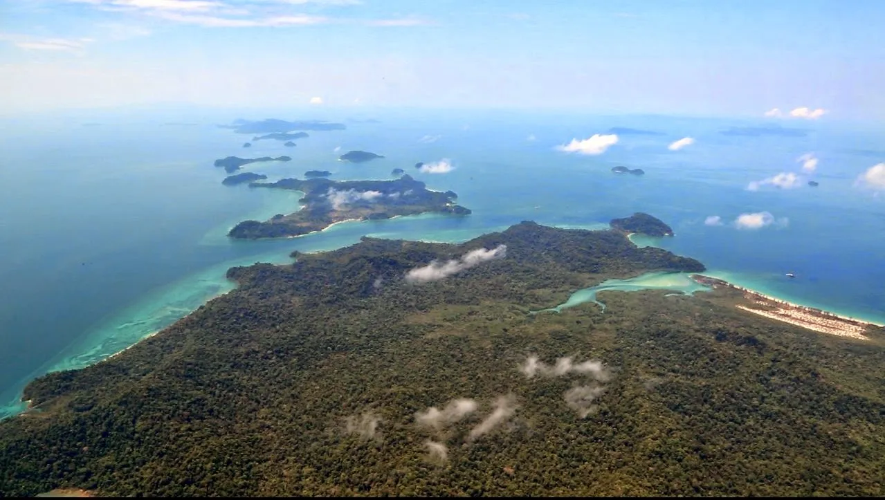

La météo se dégrade encore dans les jours à venir vers le Laos. Or la permission de se poser au Laos n’est valable que quelques jours, par conséquent il faudrait en demander une nouvelle dès maintenant, qui peut prendre des semaines à être obtenue, et pour demander une date d’arrivée au Laos encore très incertaine...
La décision est prise, à contre-coeur, d’adapter le programme, et de se rendre directement au Myanmar : nous ne nous poserons pas au Laos, ni au Vietnam ni au Cambodge, comme cela était initialement prévu. Les scientifiques laotiens et vietnamiens sont déçus, autant que nous. C’est sûr, il faudra y revenir lors d’un prochain voyage !
Nous décollons donc en longeant la côte ouest thaïlandaise, puis la côte birmane, pour nous poser à Rangoon où Hervé, son épouse Touza et leur fille Tanaka nous accueilleront. La végétation birmane est luxuriante, un vrai paradis sauvage ! Pas d’habitation, des plages désertes, il paraît même que l’on peut y voir des éléphants sauvages ! On plisse les yeux, mais le couvert végétal est si dense qu’on ne voit rien.
